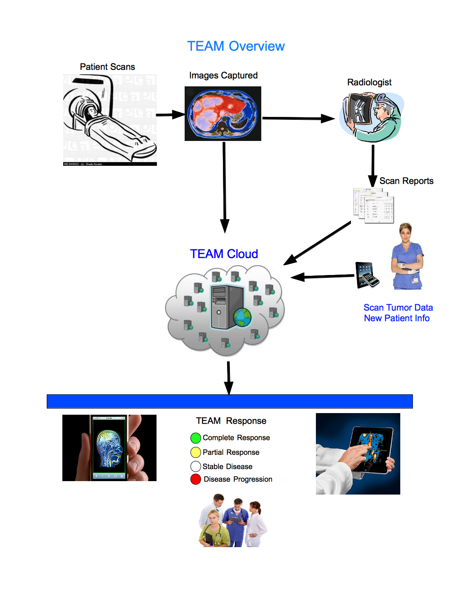

Overview
The TEAM system will assist you in the
tracking and evalauation of patients that are participating
in internal studies or Pharmaceutical sponsored clinical
trials.
The primary fuction of TEAM is to automatically calculate and determine the RECIST (Response Evaluation Criteria In Solid Tumors) response based upon scan data that is managed witihin the TEAM database. TEAM also allows you to set up a study with response critieria different than RECIST (i.e. irRC).
All TEAM App users will be able to share information about the patients in a secure environment. Because of confidential patient information, comprehensive security features are built into the TEAM App.
TEAM can also display scan images and scan reports for easy access via your mobile devices.
Customized reports can assist with the ongoing reporting requirements of clinical trials and internal studies. Some reports are available via secure login using standard Web Browsers.
TEAM is extremely easy to use and easy to administer. A seperate TEAM-ADMIN app provides for the managing of user logins and other system related features.
The primary fuction of TEAM is to automatically calculate and determine the RECIST (Response Evaluation Criteria In Solid Tumors) response based upon scan data that is managed witihin the TEAM database. TEAM also allows you to set up a study with response critieria different than RECIST (i.e. irRC).
All TEAM App users will be able to share information about the patients in a secure environment. Because of confidential patient information, comprehensive security features are built into the TEAM App.
TEAM can also display scan images and scan reports for easy access via your mobile devices.
Customized reports can assist with the ongoing reporting requirements of clinical trials and internal studies. Some reports are available via secure login using standard Web Browsers.
TEAM is extremely easy to use and easy to administer. A seperate TEAM-ADMIN app provides for the managing of user logins and other system related features.
BENEFITS
- Access Patient scans, reports, and more when you
are not in the Office
- Easy to use iPhone and iPad interface
- All your collegues can share the same TEAM
information
- Response calculations performed in real-time
- Patient data available as soon as your
radiologist completes his report
- Facility to compare scan images side-by-side for
an individual lesion
- Customized reports with your Medical Center in the headers
FEATURES
- Comprehensive security features including Web
authentication, and User Logins with password
protection
- Patient response calculations based upon current
RECIST criteria for determining progression of disease
-
Customized response criteria can be set up for
individual studies that use different percentages for
response evaluation than RECIST
-
Patient Response Report available on your mobile
device and via any standard Web Browser. Additional
security is employed when accessing reports via your
desk top Web Browser
- Store lesion images for easy viewing and zooming
in TEAM
- Compare a lesion from two different scan dates
side by side
- Store and access internal and clinical trial
documents
- Full online Help facility
- Administration - User Login and Password maintenance
- On site training available upon request
- 24/7 Software and user support - we care about you
The following is a flow diagram depicting the TEAM
environment
